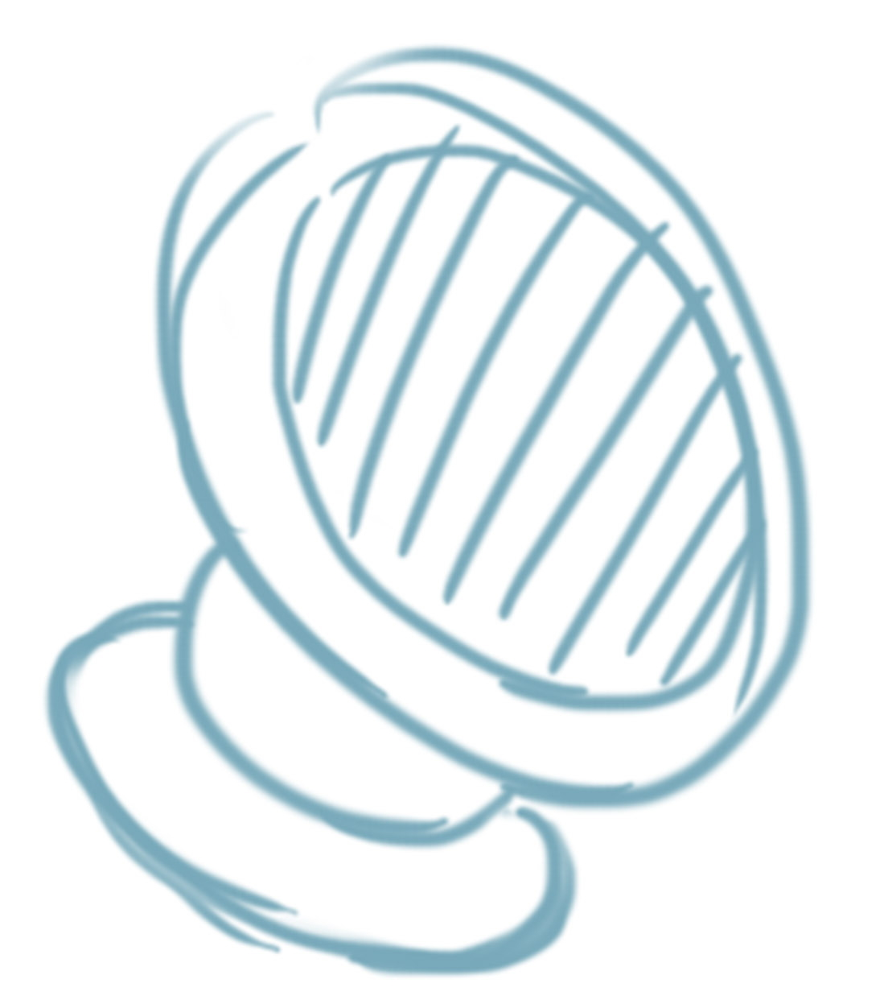
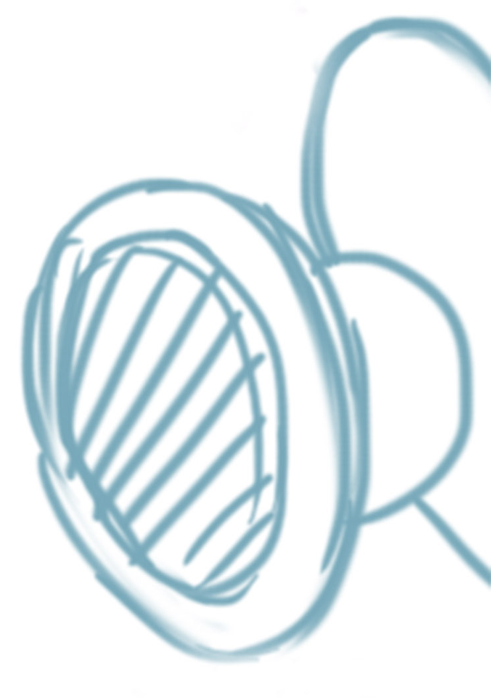

想放鬆的聽手機裡的音樂，但都找不到適合擺放的位置嗎？
副駕駛想看影片卻只能一直用手拿著，手好酸喔。
跳脫侷限 超越極限
神馬進化版吸附式手機支架，獨特新款色系，金屬材質，不止耐用，質感更加分。
PU吸附膠可重複使用，當不黏或沾黏太多灰塵時，將托盤整個取下後用清水清洗後，待自然晾乾即可使用。


懸浮磁心
托盤無需安裝即可使用，中心採磁心內置鋁合金外框，保護磁鐵不輕易脫落，懸浮磁心讓該心自動內凹，強力吸附在球型支架上
360度旋轉無死角
可360度旋轉無死角，雙倍加固磁力支撐您的手機，動態環境中使用有不容易掉落，讓您在行車時更加安全便利